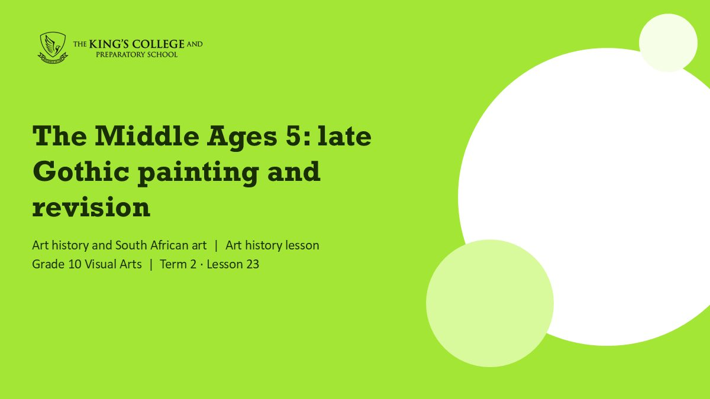

Term 2 · Lesson 23 · Art history lesson
The Middle Ages 5: Late Gothic Painting and Revision
Start Here
Today I Will
- Describe late Gothic painting and illuminated manuscripts
- Explain how Giotto began to change painting
- Make a summary map of the Middle Ages for the class test
Think first
Before printing, every book was written and painted by hand. How might that change the way people valued a book?
Words to Know
| Word | Meaning |
|---|---|
| Illuminated manuscript | A handwritten book decorated with paintings, borders and gold, made before printing. |
| Altarpiece | A painted or carved work placed behind or above an altar in a church. |
| International Gothic | An elegant, refined style of about 1375–1425 shared across European courts, with graceful figures, rich colour and gold. |
| Diptych | An artwork of two panels joined by hinges. |
| Egg tempera | Paint made by mixing powdered pigment with egg yolk, used on wooden panels. |
Slides

Videos
Notes
Gothic painting and illuminated manuscripts, leading to Giotto; revision for the class test.
Late Gothic Painting
- Illuminated manuscripts: Hand-made books with painted scenes and gold borders; the Limbourg brothers' Très Riches Heures (c. 1412–1416) is a famous late example.
- The Wilton Diptych: c. 1395–1399: a small portable altarpiece in egg tempera and gold leaf on oak.
- Richard II kneels: On the left the king is presented by St John the Baptist and two English royal saints.
- Heavenly approval: On the right Mary and the Christ Child appear with angels wearing Richard's white hart badge.
- International Gothic: Graceful figures, rich blues and gold, fine detail: elegant rather than weighty.
Towards Giotto
| Gothic and Byzantine painting | Giotto (Arena Chapel, c. 1305) |
|---|---|
| Flat figures on gold backgrounds | Weighty, rounded figures modelled with light and shade |
| Elegant, floating poses | Figures stand and sit with weight; some turn their backs to us |
| Little sense of space | A shallow but believable stage with landscape and buildings |
| Calm, formal faces | Real human emotion, as in the grieving figures of the Lamentation |
Remember
The Middle Ages moved from flat gold heaven to Giotto's weighty, feeling people.
Practical
You need: A3 paper or VJ, History booklet, coloured pens
Middle Ages Summary Map
- Put 'The Middle Ages, c. 400/500 – c. 1500' in the centre of the page.
- Add five branches: Early Christian and Byzantine, Islamic, Romanesque, Gothic, Late Gothic painting.
- On each branch write dates, three characteristics and one key work with its medium.
- Add the key terms for each branch (for example tesserae, mihrab, tympanum, flying buttress, diptych).
- Analyse one work on the map in four short lines: describe, analyse, interpret, opinion. The Wilton Diptych is a good choice.
- Draw arrows to show links between branches, such as the round arch from Rome to Romanesque.
Test Yourself
- Identify the medium of the Wilton Diptych.
- Explain what is meant by International Gothic style.
- Compare a Byzantine figure with a figure by Giotto.
Show answers
1. Egg tempera with gold leaf on oak panels. 2. An elegant, refined style shared across European courts around 1400, with graceful figures, rich colour, gold and fine detail. 3. Byzantine figures are flat and frontal on gold; Giotto's figures are rounded, weighty, placed in space and show human emotion.
Finished Early?
Middle Ages timeline card
Put the medieval styles in order on one card.
- Draw a line across your VJ page from c. 500 to c. 1500.
- Mark Early Christian and Byzantine, Islamic (Córdoba), Romanesque, Gothic and International Gothic in order.
- Under each, write one key work and one feature.
- Draw a tiny icon for each, such as an arch or a mosaic tile.